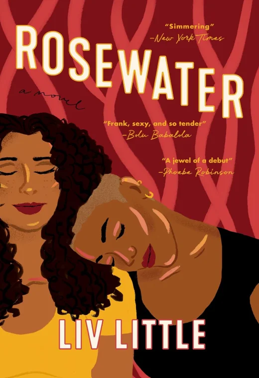

Rosewater is a powerful debut novel exploring identity, love, and community. Liv Little brings a fresh, inclusive voice to contemporary fiction, blending realism with lyrical storytelling.
Perfect for readers interested in diverse, character-driven stories with emotional depth.
Buy on Amazon